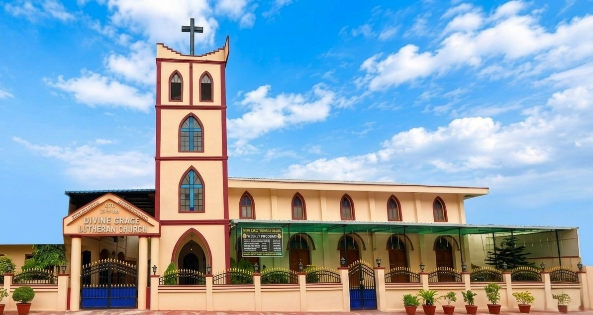

A Church Built on Grace.
A place of worship, fellowship, faith and prayer in Bhavani Nagar, Hyderabad.
Grace that welcomes. Faith that gathers.
Divine Grace Lutheran Church is part of the Andhra Evangelical Lutheran Church and is a place for worship, fellowship, faith and prayer.
We gather as a church family to worship God, grow in faith, encourage one another and share in the life of the church.

A place to belong.
A church family gathered in faith, worship and fellowship, where we come together to grow in our walk with Christ.
Where two or three are gathered in my name, there am I among them.
Matthew 18:20Faith that becomes action.
Our faith is lived through worship, fellowship, prayer and the simple ways we care for one another.
Worship
We gather in worship, prayer and thanksgiving, keeping Christ at the heart of our church life.
Fellowship
We grow together as a church family, sharing faith, encouragement and fellowship.
Service
We seek to put our faith into practice through kindness, care and service to others.
Let us not love with words or speech but with actions and in truth.
1 John 3:18